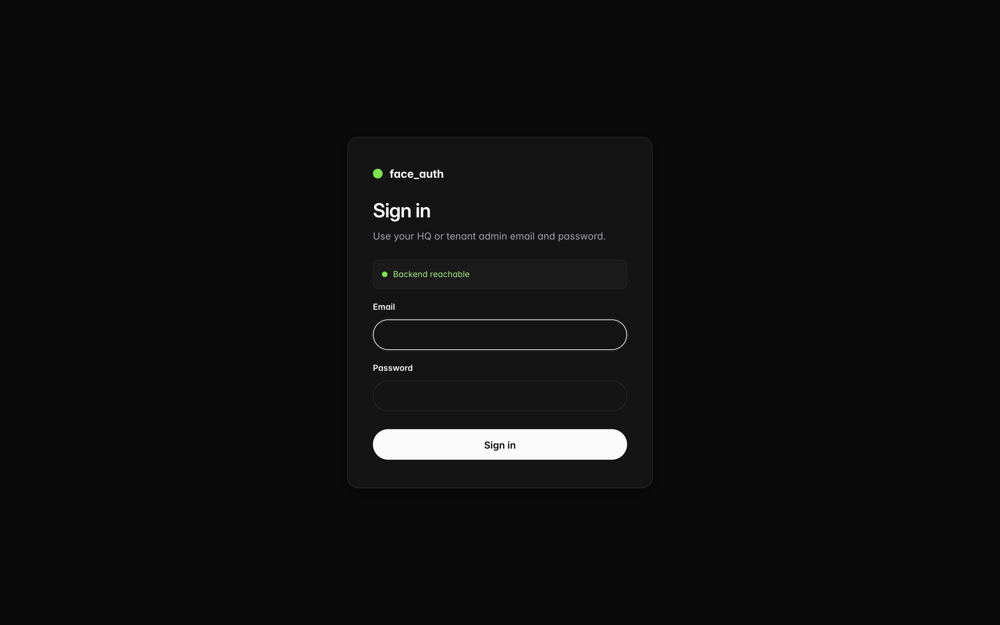
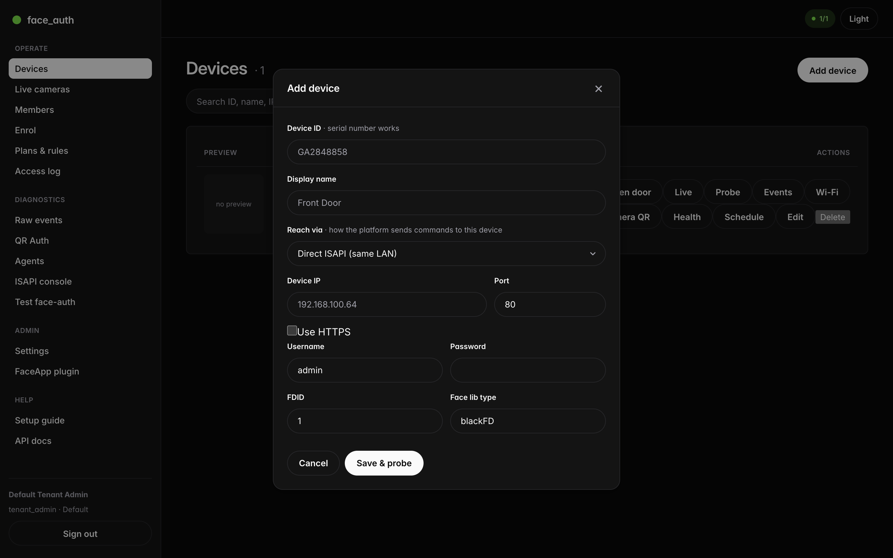
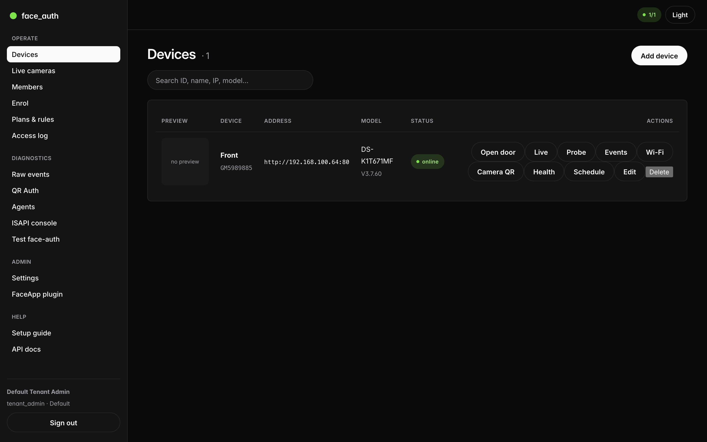
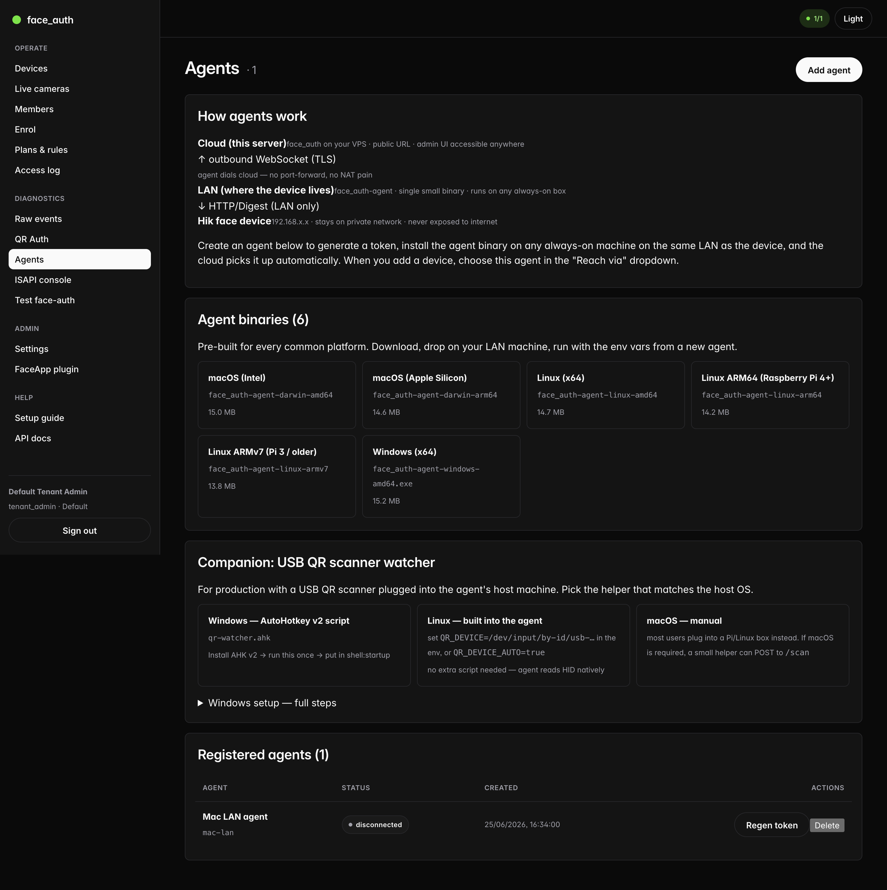
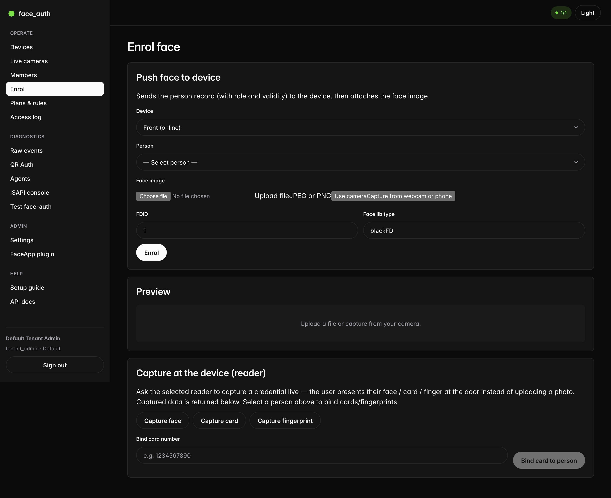
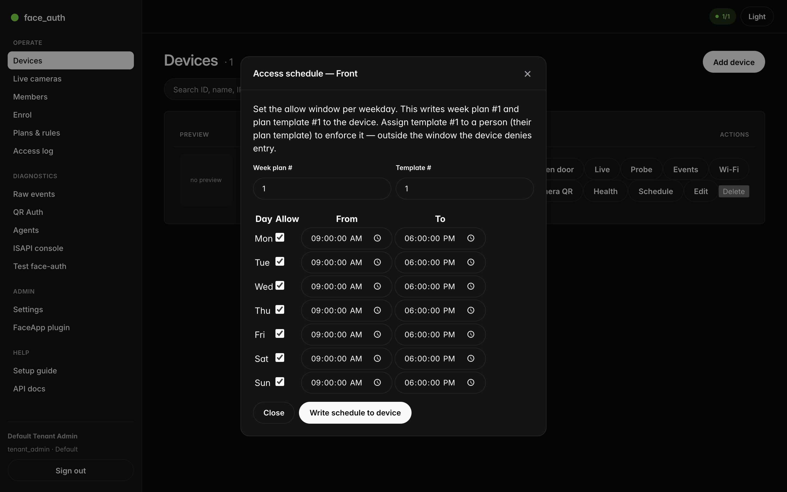
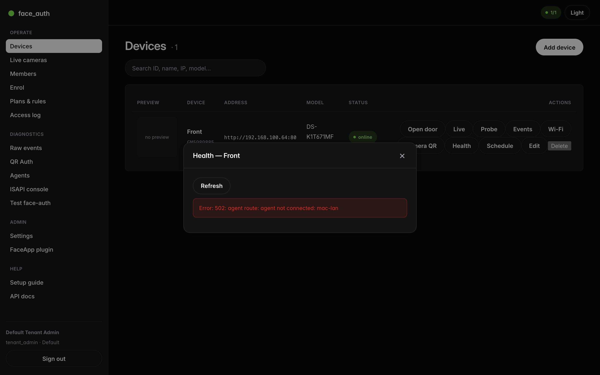
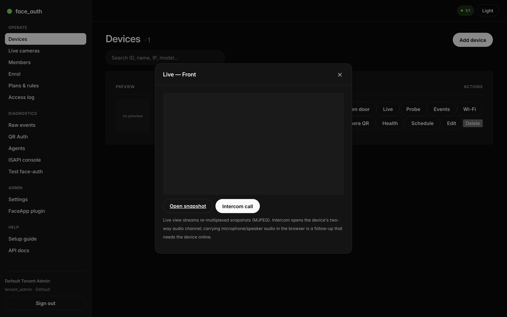
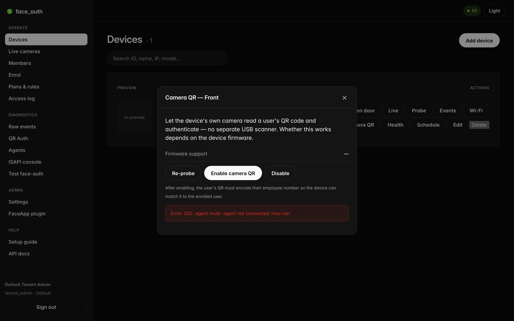

Start the stack & sign in
Everything runs in Docker. Bring it up, then open the operator console in your browser.
# from the project folder docker compose up -d # rebuild after code changes docker compose up -d --build backend admin
- Open
http://localhost:5173— the admin console. - Sign in. HQ admin
hq@faceauth.localsees all tenants; a tenant admin is scoped to one. - Change the seeded password before going live.

Pick how the platform reaches the device
Before anything else, decide how commands travel from the backend to the terminal. It isn't Wi-Fi versus cable — it's whether the backend can reach the device's IP. You set this per device with the Reach via dropdown.
Direct ISAPI
Backend and device share a network. needs: device IP + login
Via agent
Backend is elsewhere; an agent on the device LAN relays. needs: a running agent
OTAP push
Device dials the backend — no agent, no port-forward. needs: supporting firmware
Not sure?
Start Direct. If the probe can't reach the device, switch to Agent. tip

Connect a device
Add the terminal, then probe it. A successful probe returns the model and firmware and flips the status to online. Every feature in this guide is a button on the device row.
- Devices → Add device.
- Enter Device ID (serial works), name, IP, port, username and password.
- Set Reach via (see section 2).
- Click Save & probe — look for
reachable: true.

Download & run the LAN agent
Need Agent reach? Create an agent for its credentials, download the matching binary, and run it on any always-on machine on the device's network. Downloads are public — no token needed.
- Agents → Add agent — copy the Agent ID and one-time token.
- Download the binary for the host's OS from the Agent binaries card.
- Run it with the env vars shown (
CLOUD_URL,AGENT_ID,AGENT_TOKEN). - It appears as connected; pick it in a device's Reach via → Via agent.

Enrol a person's face, card & finger
Create the person, then give them a credential. Upload a photo — or, better, capture at the reader: the user presents their face, card, or finger right at the door.
- Members → New (name, employee number, role).
- Open Enrol; choose the device and the person.
- Upload / use webcam — or use Capture at the device.
- For cards, type the number and Bind card to person.

Control when people may enter
A schedule sets an allow-window per weekday. The device itself refuses entry outside it — enforcement happens at the door, not just in software.
- Devices → Schedule.
- Tick the days, set From/To (defaults to 09:00–18:00).
- Write schedule to device — saves a week plan + template.
- Assign that template number to a person to enforce it.

Check device health at a glance
Devices → Health reads the terminal's working status: door and lock state, tamper, battery and how much face capacity is used. Refresh to re-poll.

Watch the door & talk to it
Devices → Live opens a live view (a snapshot stream), lets you grab a still, and start an intercom call — which opens the terminal's two-way audio channel.

Let the terminal read a QR code
Devices → Camera QR probes whether the terminal's own camera can scan QR codes, then lets you enable it — so the user shows their QR to the camera instead of a separate USB scanner.

Drive it from your own app
Every feature here is also a third-party endpoint under /api/v1/*, authenticated with an API key (issue keys in Settings). Enrolment, schedules, health, QR and intercom are all there.
# arm a 10s face-auth window on a device curl -X POST https://your-server/api/v1/auth/face/start \ -H "X-API-Key: fa_…" \ -d '{"deviceId":"GM5989885"}' # capture a card at the reader, then bind it curl -X POST https://your-server/api/v1/devices/GM5989885/capture/card \ -H "X-API-Key: fa_…"
Full reference: API.md §4.15–4.19. Setup details: SETUP.md. Feature reference: README.md.